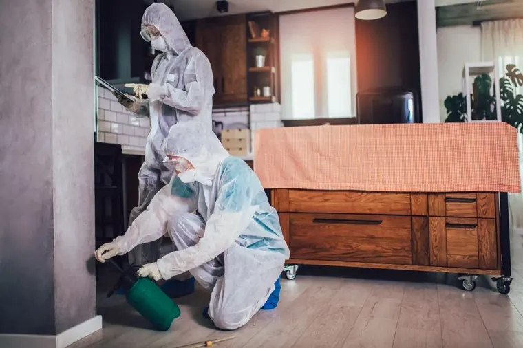

Pest control in Canberra, done right.
TCB Pest Control Canberra provides professional pest control services across Canberra, offering licensed treatments for termites, spiders, rodents, cockroaches and more.
- 24
- PESTS COVERED
- 24h
- QUOTE TURNAROUND
- 4.8★
- Google rating
- 100%
- Satisfaction guarantee
Pest control for every kind of property.
Residential
A healthier, safer living environment with proven treatments for everyday household pests.
- General pest treatments
- Pre-purchase inspections
- Family-safe products
Commercial
Discreet, compliant pest control for offices, retail, hospitality, schools and strata.
- Hospitality & food service
- Strata & real estate
- Schools & childcare
- Audit-ready reporting
Termites
Termidor-accredited inspections, treatment and ongoing protection for your property.
- Pre-purchase inspections
- In-ground barrier treatment
- Annual monitoring
Pests We Treat
Ants, spiders, cockroaches, rodents, wasps, bees, silverfish, moths, fleas, bed bugs and more.
- Same-week availability
- Targeted species treatment
- Pet & child safe
- Written report after every visit
Twenty four pest species. One specialist team.
Our most-requested species — plus pests other Canberra firms tend to pass on. Every treatment uses family-safe product and includes a written report you can keep.
See all pests →
The quiet damage.
Caught early.
A single colony can hollow structural timber in months — and the signs rarely show on the surface. Our Termidor-accredited inspections and treatment come with a structural warranty on qualifying work.
A guarantee, not a hope.
We stand by our work with a 100% satisfaction guarantee — any follow-up treatment on a covered pest is wrapped into that guarantee. Clear written quotes, accredited technicians, family-safe product on every job. Your peace of mind is our promise.
Family-safe treatment
Pet and child-friendly products, applied by trained fully licensed technicians.
Termidor accredited
Industry-leading termite treatment with a structural warranty on qualifying work.
Upfront written quotes
Every quote in writing. No surprises, no upsell, no late fees.
Termidor accredited · Structural warranty
Safe pest control, from a local team.
We use Canberra's highest quality pest spray — effective on pests, gentle around family, pets and food prep. Every technician is fully licensed and insured, with up-to-date training in safe application and reporting.
- Fully licensed & insured local team
- Family-run, family-friendly products
- Upfront written quotes — no surprises
- twenty four pest species covered by the same team

Twelve suburbs. Pest control across the whole ACT
Our local teams cover every Canberra district and the surrounding region — from Belconnen to pest control in Tuggeranong, Woden to Molonglo Valley, plus Queanbeyan and Jerrabomberra.
Common pests in Canberra homes and businesses.
Canberra's continental climate and its position at the edge of surrounding bushland create specific pest challenges that differ from coastal Australian cities. These are the pests we treat most regularly across the ACT.
Cockroaches
A year-round pest in Canberra properties. German cockroaches thrive in kitchen and bathroom environments, breeding rapidly in warm conditions. A small infestation can become a significant bug problem within weeks if left untreated.
Rodents — Rats & Mice
Noticeably more active as temperatures drop in autumn. Cold winters drive rodents into roof voids, wall cavities and garages. See our guide to rat and mouse pest control through autumn for the signs to watch for.
Spiders
Redbacks are common in Canberra gardens, garages and outdoor furniture through spring and summer. White-tailed spiders are found indoors year-round and are regularly encountered in bedrooms and living areas.
European Wasps
Vespula germanica builds large nests in Canberra roof spaces, wall cavities and in the ground. Colony numbers peak through summer and early autumn. Unlike bees, European wasps sting repeatedly — removal requires a licensed pest controller with appropriate protective equipment.
Ants
Multiple species forage actively through the warmer months, particularly during dry spells when ant colonies move inside Canberra homes in search of water. Perimeter treatment and targeted baiting address sustained pressure.
Termites
Subterranean termites are established across the ACT and can cause severe structural damage before becoming visible. Regular inspections are essential — they are covered in detail in the termite section below.
Do seasonal changes affect pest activity in Canberra?
Yes, and the shift is significant. Understanding the seasonal pest cycle across the ACT helps you act before an infestation establishes rather than reacting after it already has. For more on why ongoing pest management makes sense year-round, see our article on why pest control is important in Canberra.
Summer
- European wasp colonies reach maximum size
- Cockroach numbers rise in commercial kitchens and domestic pantries
- Spider activity outdoors is at its peak
Autumn
- Rodents begin moving inside as nights cool — the majority of rat and mouse calls come in across Canberra
- Wasp queens seek sheltered spots to overwinter
Winter
- Rodents remain active inside heated buildings
- Cockroach infestations in warm indoor environments continue year-round regardless of outside temperature
Spring
- Ant colonies expand and begin foraging indoors
- Termite swarmers (alates) emerge as soil temperatures rise — a practical time to book an inspection if you haven't had one in the past 12 months
Are pest control treatments safe around children and pets?
All pest control products applied by licensed operators in Australia must be registered with the Australian Pesticides and Veterinary Medicines Authority (APVMA). Registration requires the product to meet assessed standards for human health, animal safety and environmental impact before commercial use is permitted.
APVMA-registered products
Every product we apply is registered with the Australian Pesticides and Veterinary Medicines Authority. Registration requires assessed standards for human health, animal safety and environmental impact — not just pest efficacy.
Clear re-entry times
Most treatments call for a re-entry period after application — typically 30 minutes to four hours depending on the product and method. We tell you the specific timeframe before we start. Cockroach gel baits, for example, are highly targeted and involve far less product exposure than a perimeter spray.
We plan around your household
If you have specific concerns — a young infant, a pet with respiratory sensitivities, an aquarium — let us know when you book. We plan the treatment method and timing around those requirements rather than applying a one-size approach.
Get a quote today.
Pest-free tomorrow.
Tell us about your property and pest problem. We'll get back within one business day with a written quote and booking options. No pressure, no upsell, no late fees.